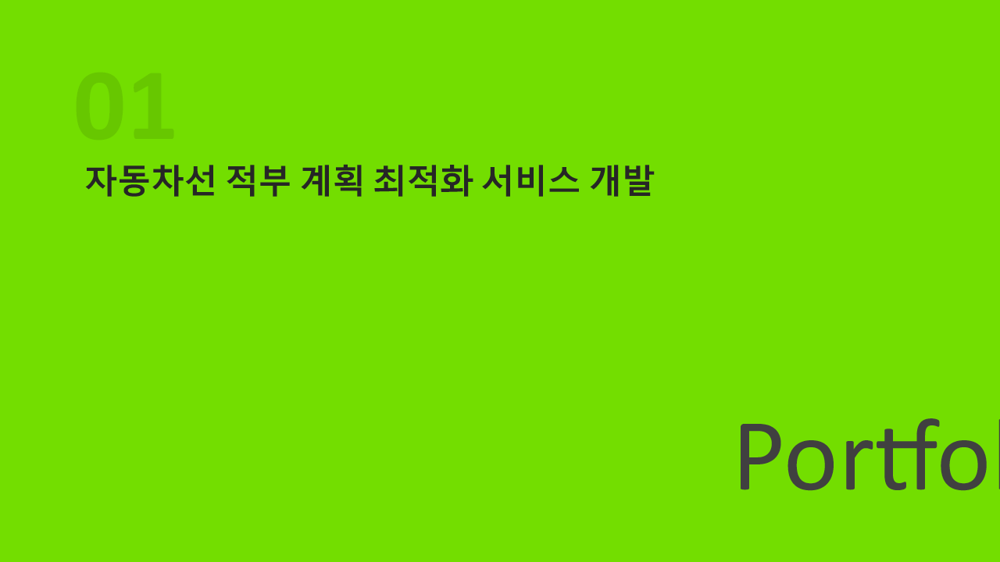
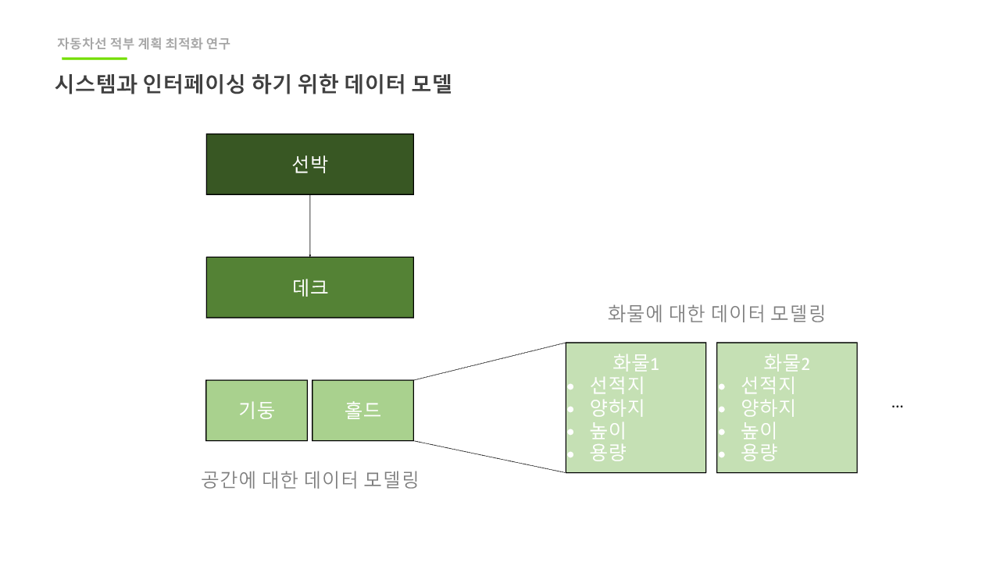

기간
2025-01 ~ 현재
Supporting Case
제한된 네트워크 환경에서 AI 서비스를 서비스 단위로 배포·관찰·운영할 수 있는 내부 Kubernetes 플랫폼을 직접 구성하고 운영 체계를 정리했습니다.
2025-01 ~ 현재
플랫폼 설계, 배포 파이프라인 운영, 장애 원인 분석/완화
Rancher, Helm, GitLab CI/CD, Harbor, Grafana, Prometheus, Loki
서비스 재사용성 향상, 보안 전환 대응, 장애 재발생 속도 감소
Ingress 보안 대응, 노드 통신 이슈 정합, 셋업 자동화
신규 서버 발급과 행정 절차에 시간이 많이 걸리고, 모델/서비스가 늘어나도 개별적으로 운영하면 운영 비용이 기하급수적으로 증가했습니다. 내부망에서는 인터넷 의존 툴을 바로 쓰기 어렵기 때문에, 배포/모니터링/보안 정책을 자체 플랫폼으로 통합할 필요가 있었습니다.

이 그림에서 봐야 할 점

이 그림에서 봐야 할 점
| 증상 | 원인 | 조치 | 결과 |
|---|---|---|---|
| 일부 요청만 응답, 보안 업데이트 우려 | NGINX ingress의 CVE 및 지원 종료 리스크 | Istio + Gateway API로 라우팅 기준 이행 | 지원 정책 대응성과 라우팅 일관성이 개선됨 |
| 요청이 특정 node에서만 처리 | 노드 간 통신 차단/방화벽 포트 미설정 | 방화벽 규칙 및 포트 정책을 노드 공통 설정으로 정리 | 요청 분산이 안정화되고 응답 편차가 축소됨 |
| 특정 노드의 메모리/CPU 점유 비정상 증가 | SELinux 감사 로그 과다 발생과 setroubleshootd 동작 | 불필요한 데몬 조정 및 로그량/수집 정책 최적화 | 노드 레벨 자원 압박이 완화되고 운영 알림이 정상화됨 |
서비스 단위의 배포와 모니터링 체계를 정규화해 운영 절차를 일관화했습니다.
라우팅/인그레스 변경을 표준화해 취약점 대응과 정책 변경이 빠르게 반영됩니다.
노드 통신 및 로그 과다 이슈가 체계적으로 처리되면서 유사 장애 반복 빈도가 하락했습니다.
작은 규칙(포트, 라우팅, 로그 태그)이 플랫폼 운영의 신뢰도를 만듭니다.
Ingress 구조 전환은 보안 패치뿐 아니라 트래픽 일관성을 확보하는 운영 설계였습니다.
재발 가능성이 높은 이슈를 원인-조치-결과로 기록해야 팀 대응이 축적됩니다.